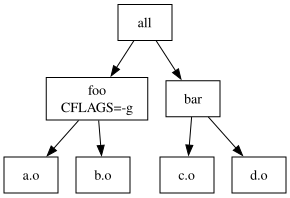
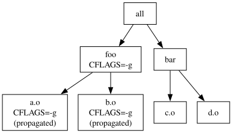
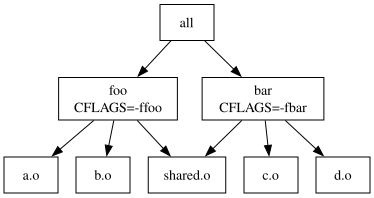
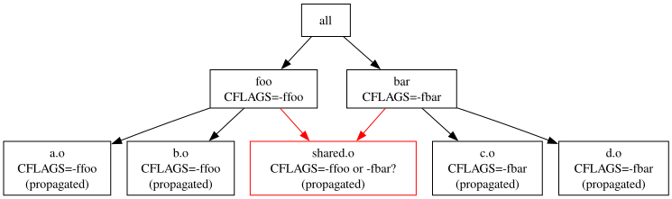
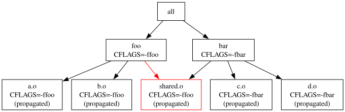
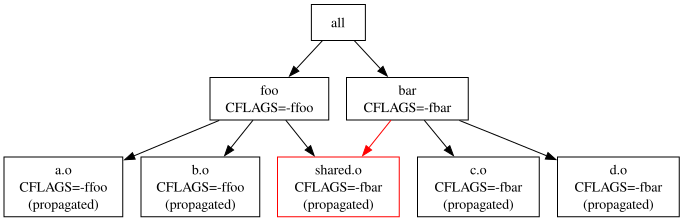
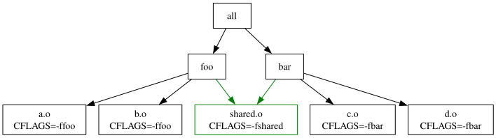
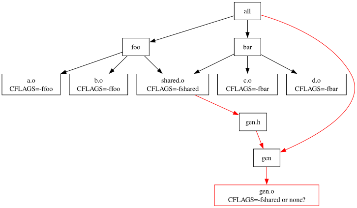
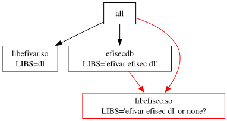

An obscure make --shuffle bug
Most of the time make --shuffle finds somewhat trivial bugs of missing
dependencies. I have collected a few examples here.
It is sometimes hard, but still feasible to trigger these bugs without a
shuffle by carefully placing a few sleep 10 calls here and there to
reorder rule execution.
But today I'll talk about the bugs that could not be easily triggered by
just waiting more. Should these bugs be treats as bugs in Makefile?
Or are they bugs in the make --shuffle permutation algorithm? You be
the judge!
A gist of the Makefile language
Makefile language is an interesting one: it has a strong spirit of a
declarative family: it should not be very important in which order you
define rules and variables in the file, the rule execution order should
not matter much either. That property makes the input very friendly to
parallelism: you can consider a Makefile as a form of a serialized
build graph.
The graph analogy holds surprisingly well for most of the build systems
out there. But sometimes you get the rare ones that are clearly
not designed to be executed in parallel. Those are also fine. We can
add .NOTPARALLEL: to them and be done with it.
If we ignore clearly unclean build systems there are a few GNU
extensions that break the graph model a bit. Things like immediate
variable assignments A := B are one of them.
For example, the following Makefile illustrates the subtlety of
immediate and deferred assignments:
all: a b
V := 1
AI := $(V)
AD = $(V)
a:
@echo a: V=$(V) AI=$(AI) AD=$(AD)
V := 2
BI := $(V)
BD = $(V)
b:
@echo b: V=$(V) BI=$(BI) BD=$(BD)
Take some time time and try to predict the output here.
Ready now? Here is the correct answer:
$ make
a: V=2 AI=1 AD=2
b: V=2 BI=2 BD=2
Here both V= and AD= values are deferred until the final assignment.
This is a well-known gotcha of Makefiles: immediate and deferred
assignments can influence macro expansion and rule definition.
Immediate assignment arguably does not break declarative model too much.
Don't worry just yet: make --shuffle does not change output of this
example.
Target-specific variables
Another GNU make extension is
Target-specific Variable Values.
The typical use looks benign:
all: foo bar
@echo all
foo: a.o b.o
@echo "foo ($^)"
bar: c.o d.o
@echo "bar ($^)"
%.o:
@echo cc $(CFLAGS) -o $@
foo: CFLAGS=-g
Here we define 2 targets: foo and bar. But for foo (and it's
prerequisites) we specify CFLAGS=-g target-specific override.

For this case the execution looks like that:
$ make
cc -g -o a.o
cc -g -o b.o
foo (a.o b.o)
cc -o c.o
cc -o d.o
bar (c.o d.o)
all
No surprises here either: all object files needed for foo use
CFLAGS=-g override. None of the object files used by bar use -g:

So far so good. No ambiguities here.
make --shuffle does not change this output either.
Today's problem
Now, what happens if we do share an object file across the targets and happen to use different overrides for it? Here is our toy example:
all: foo bar
@echo all
foo: a.o b.o shared.o
@echo "foo ($^)"
bar: c.o d.o shared.o
@echo "bar ($^)"
%.o:
@echo cc $(CFLAGS) -o $@
foo: CFLAGS=-ffoo
bar: CFLAGS=-fbar

What output do you expect here? Does shared.o get compiled once? Or
twice? Does it use -ffoo or -ffbar? Is it deterministic?

Take some time and come up with an answer.
How it all behaves
Let's start from the simple case:
$ make
cc -ffoo -o a.o
cc -ffoo -o b.o
cc -ffoo -o shared.o
foo (a.o b.o shared.o)
cc -fbar -o c.o
cc -fbar -o d.o
bar (c.o d.o shared.o)
all
Here shared.o gets built once (it's a single node in our build graph
after all) and it uses -ffoo flag.

Now, why does it use -ffoo and not -fbar? Can you come up with a
scenario when it uses -fbar?
Apparently if you use just make or make -j you will consistently get
the same cc -ffoo -o shared.o command.
The way GNU make builds the graph is the topological sorting of
targets and prerequisites defined by Makefile syntax.
It is always starts with a.o b.o shared.o and maybe finishes with
foo c.o d.o bar all.
But there is an easy way to alter this order! Try this instead:
$ make bar foo
cc -fbar -o c.o
cc -fbar -o d.o
cc -fbar -o shared.o
bar (c.o d.o shared.o)
cc -ffoo -o a.o
cc -ffoo -o b.o
foo (a.o b.o shared.o)
Now shared.o is built with -fbar flag! And the same would happen if
you did a partial make bar build. Or if you would change Makefile
from all: foo bar to all: bar foo:
--- a/Makefile
+++ b/Makefile
@@ -1,4 +1,4 @@
-all: foo bar
+all: bar foo
@echo all
foo: a.o b.o shared.o

This is a problem. And that can be triggered by make --shuffle!
No shuffle:
$ for i in `seq 1 1000`; do make -j | grep -- '-o shared.o'; done | sort | uniq -c
1000 cc -ffoo -o shared.o
Ideal consistency. Nothing shows the problem. With shuffle:
$ for i in `seq 1 1000`; do make -j --shuffle | grep -- '-o shared.o'; done | sort | uniq -c
494 cc -fbar -o shared.o
506 cc -ffoo -o shared.o
Almost 50% perfect instability!
What is the correct fix here? Is it a make --shuffle bug to introduce
non-determinism? I would say: no, Makefile should be more robust in
face of target sequence passed to it.
How would one fix it properly? This default recursive propagation is
non-intuitive, GNU make provides a few keywords including private.
private makes the variable override local to specified targets and
does not recurse.
I suggest the following fix:
all: foo bar
@echo all
foo: a.o b.o shared.o
@echo "foo ($^)"
bar: c.o d.o shared.o
@echo "bar ($^)"
%.o:
@echo cc $(CFLAGS) -o $@
a.o b.o: private CFLAGS=-ffoo
c.o d.o: private CFLAGS=-fbar
shared.o: private CFLAGS=-fshared

Note that here we use the new -fshared value to make it distinct from
the other two. Running:
$ for i in `seq 1 1000`; do make -j --shuffle | grep -- '-o shared.o'; done | sort | uniq -c
1000 cc -fshared -o shared.o
No instability!
The need for private
Is private really needed? In this toy example it would work the same
with and without it.
The troubles would start if any of .o files would have in
prerequisites another .o file, say a generator that builds header
files or some other input:
all: foo bar
@echo all
foo: a.o b.o shared.o
@echo "foo ($^)"
bar: c.o d.o shared.o
@echo "bar ($^)"
%.o:
@echo cc $(CFLAGS) -o $@
a.o b.o: CFLAGS=-ffoo
c.o d.o: CFLAGS=-fbar
shared.o: CFLAGS=-fshared
# simulate that also shared.o depends on `generated.h`
# generated by `gen` tool.
all: gen
gen: gen.o
@echo gen
gen.h: gen
@echo gen.h
shared.o: gen.h

This time we will check what flags are passed to gen.o.
Without shuffle:
$ for i in `seq 1 1000`; do make -j | grep -- '-o gen.o'; done | sort | uniq -c
1000 cc -fshared -o gen.o
Whoops: -fshared got leaked into gen.o build, but at least it's
consistent.
With --shuffle:
$ for i in `seq 1 1000`; do make -j --shuffle | grep -- '-o gen.o'; done | sort | uniq -c
697 cc -fshared -o gen.o
303 cc -o gen.o
33% instability! Why it's just 33% (and not, say, 50%) is an exercise
for the reader.
Adding private to all of CFLAGS= fixes the issue:
$ for i in `seq 1 1000`; do make -j --shuffle | grep -- '-o gen.o'; done | sort | uniq -c
1000 cc -o gen.o
It's not just stable: it also removes unexpected -fshared flag as one
would probably expect.
The real world example
The above hypothetical example is almost 1-to-1 example of what happened
to efivar in PR#245.
There make --shuffle build occasionally failed as:
$ gcc -Og -g3 -Wall -Wextra -Werror -std=gnu11 -funsigned-char -fvisibility=hidden -specs=/build/source/src/include/gcc.specs -fno-merge-constants -L. -Wl,--build-id -Wl,--no-allow-shlib-undefined -Wl,--no-undefined-version -Wl,-z,now -Wl,-z,muldefs -Wl,-z,relro -Wl,--fatal-warnings -DLIBEFIVAR_VERSION=38 -D_GNU_SOURCE -D_FILE_OFFSET_BITS=64 -I/build/source/src/include/ -shared -Wl,-soname,libefisec.so.1 -Wl,--version-script=libefisec.map -o libefisec.so sec.o secdb.o esl-iter.o util.o -lefivar -lefisec -ldl
ld: cannot find -lefivar: No such file or directory
collect2: error: ld returned 1 exit status
make[1]: *** [/build/source/src/include/rules.mk:38: libefisec.so] Error 1 shuffle=721268944
Initially I thought it was just a matter of missing libefivar.so
dependency on libefisec. But Artem Klimov pointed out that those two
are not expected to depend on one another.
And indeed Makefile uses LIBS variable to specify dependencies:
all: libefivar.so libefisec.so efisecdb # and more ...
# ...
libefivar.so : LIBS=dl
# ...
efisecdb : $(EFISECDB_OBJECTS) | libefisec.so
efisecdb : LIBS=efivar efisec dl
# ...
libefisec.so : # nothing

The intent of the Makefile is to say that libefisec.so has no
external LIBS= dependencies. But LIBS= override gets leaked via
efisecdb : LIBS=efivar efisec dl and into libefisec.so via
order-only dependency.
The fix is to add private keyword to prevent the LIBS=... leakage
from efisecdb into libraries in its prerequisite list:
--- a/src/Makefile
+++ b/src/Makefile
@@ -42,3 +42,3 @@
# ...
efisecdb : $(EFISECDB_OBJECTS) | libefisec.so
-efisecdb : LIBS=efivar efisec dl
+efisecdb : private LIBS=efivar efisec dl
Parting words
Target-specific Variable Values
is a tool with very sharp edges. While it allows writing very concise
build rules their recursive nature quickly get out of hand if you don't
see the whole Makefile in front of you.
One of the mitigations is to use private keyword at an assignment site.
Another mitigation is to use different global variables for different purposes. Individual global variables are also easier to override from the outside.
make --shuffle might be able to expose instability problems in
Makefile that use target-specific variables not reproducible by
using make -j alone.
Have fun!